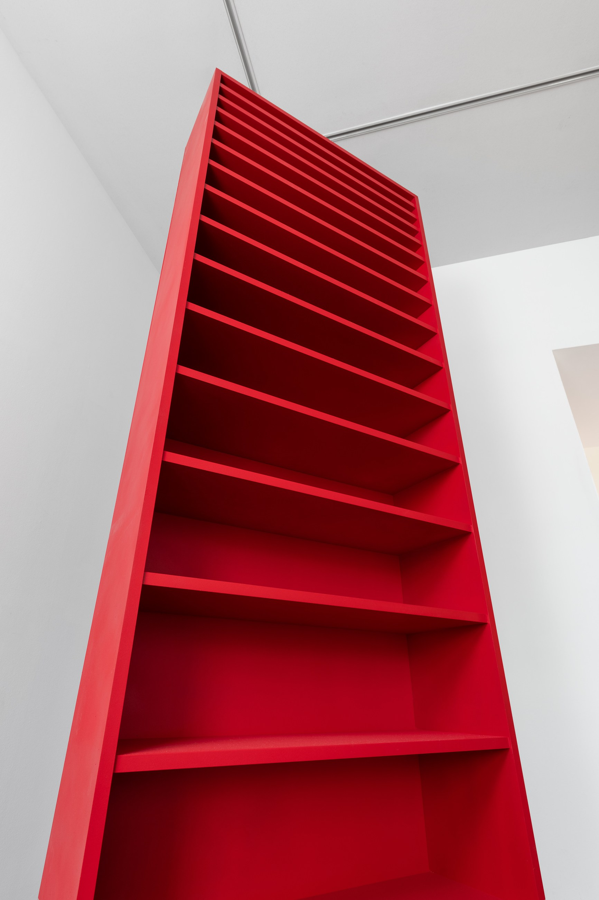
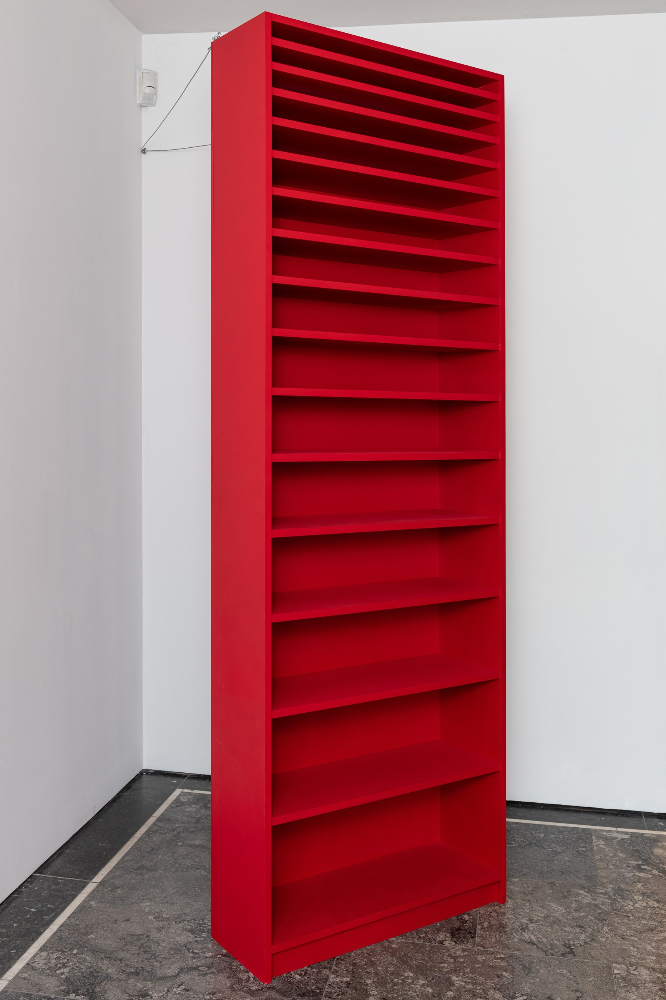
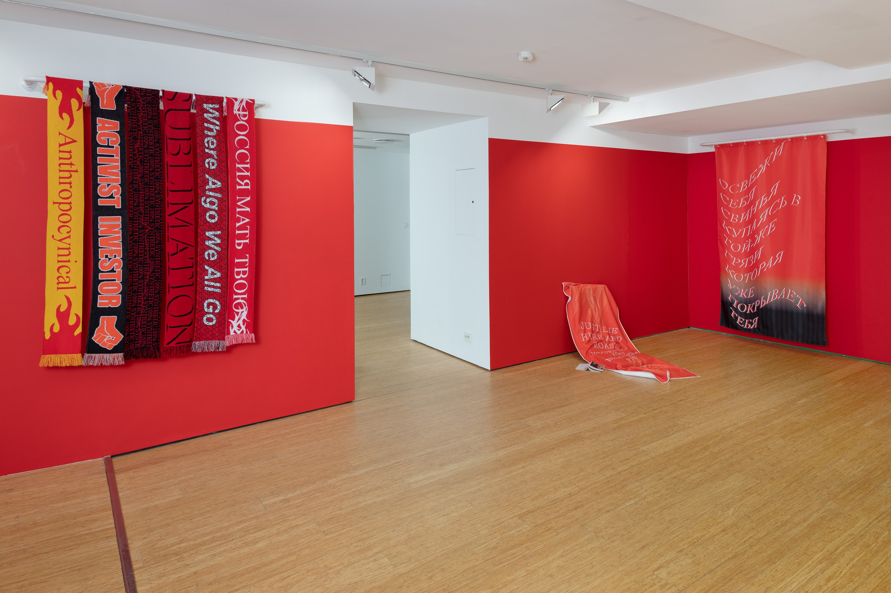
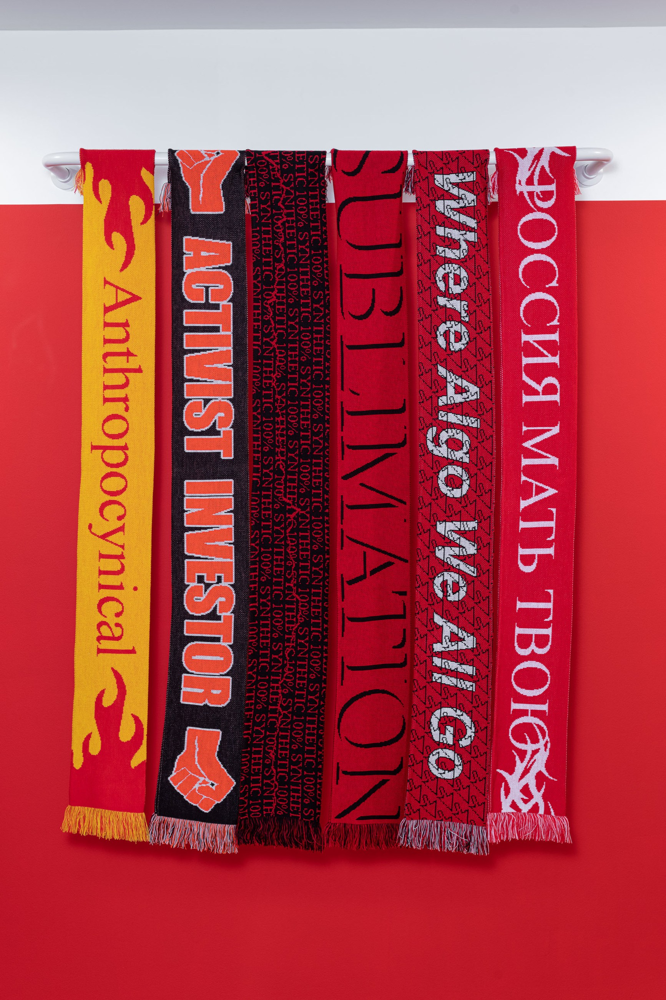
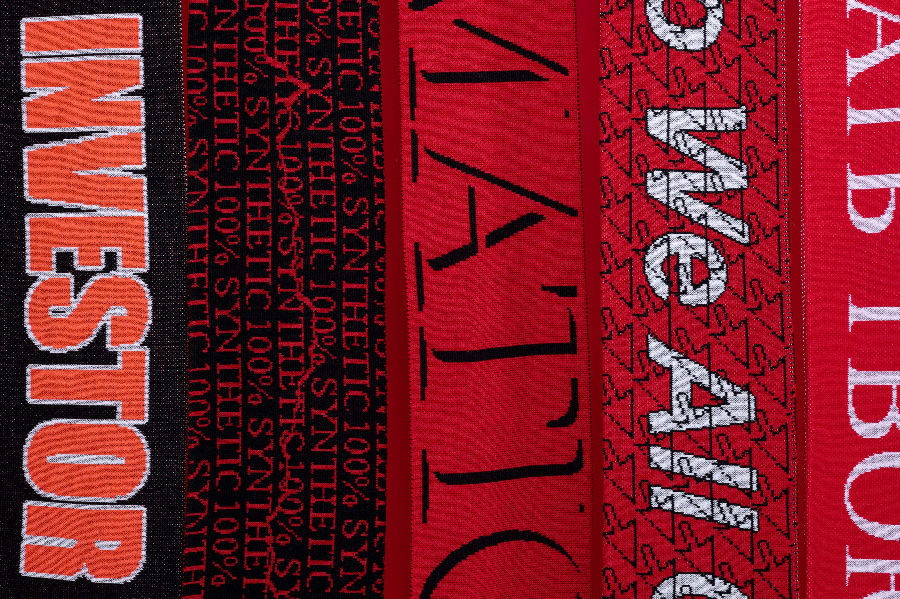
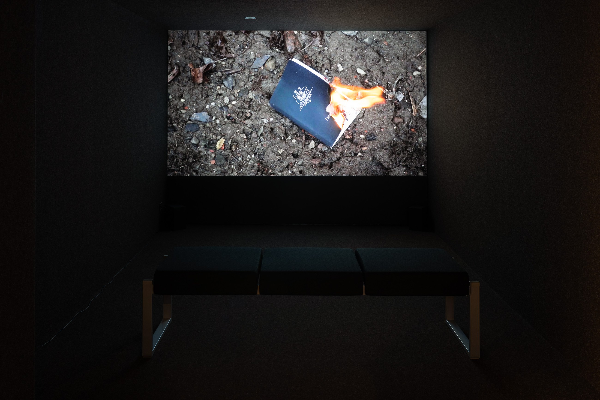
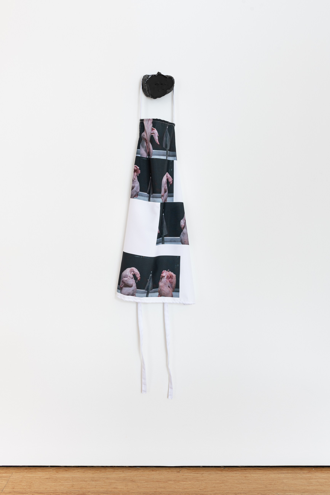
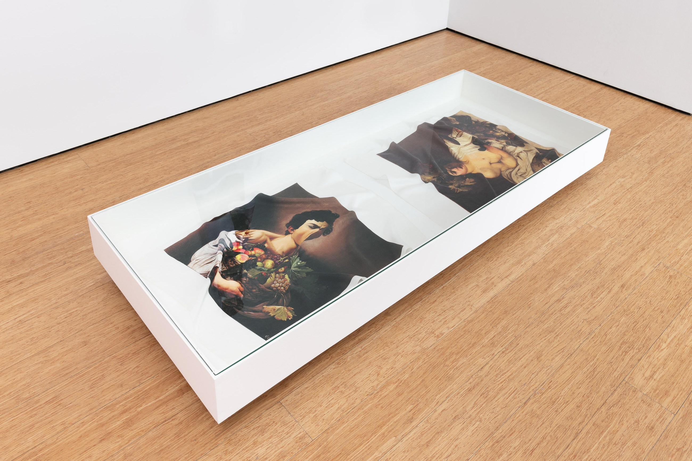
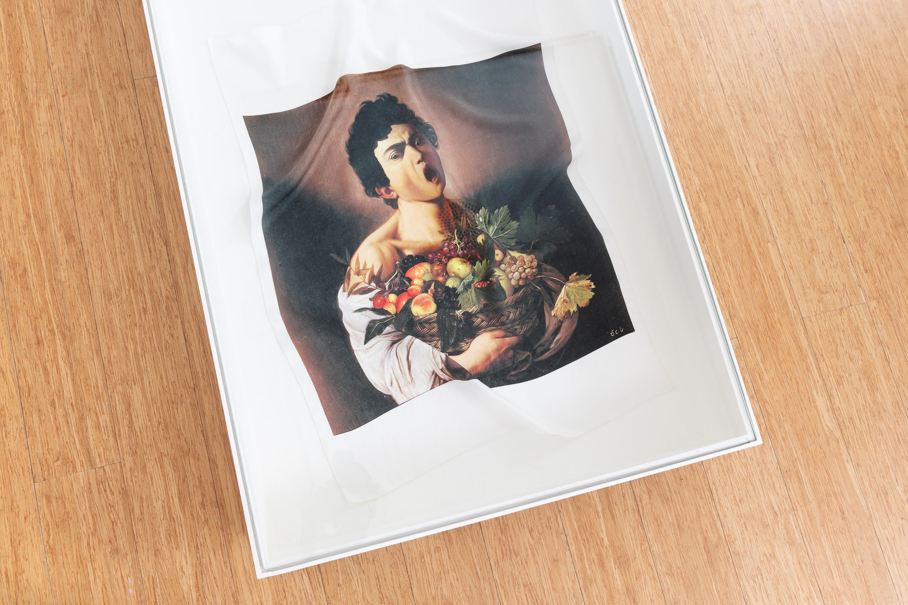

Mutations, 2021
Mutations brings familiar commodities and domestic objects into altered forms: shelving, scarves, towels, printed textiles and video. Existing objects and visual languages are copied, resized and rewritten, so that things associated with comfort and everyday use begin to behave strangely.
Photography: Istvan Virag / Telemark Kunstsenter








